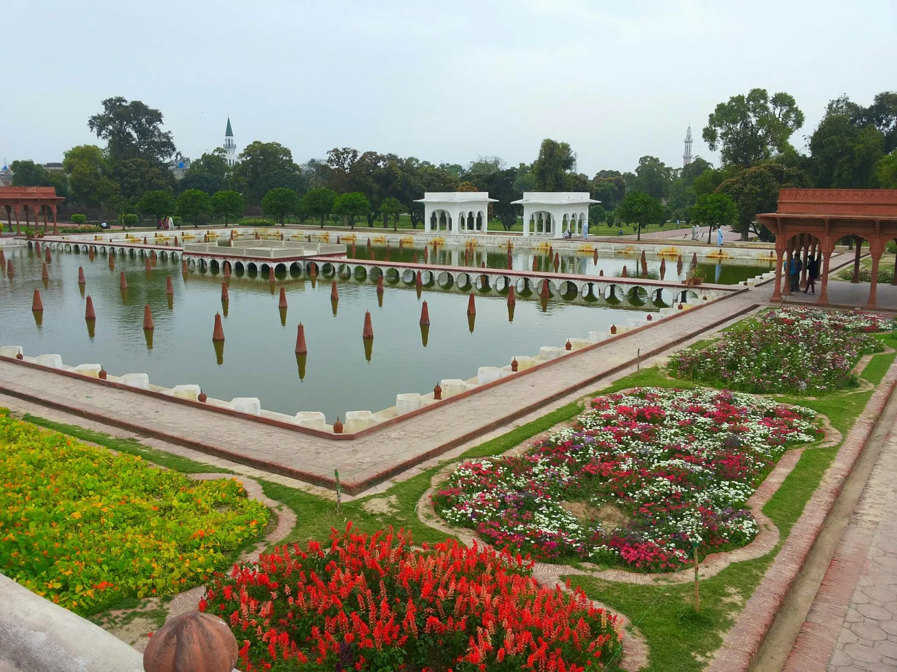

Shalimar Gardens, also known as Shalimar Bagh, are a celebrated example of Mughal garden design in Lahore. Terraces, water channels, fountains and carefully planned spaces reflect an ideal of royal leisure and landscape architecture. A visit is best enjoyed slowly, with attention to both the design and the site’s conservation needs.
A short history
The gardens were developed during the Mughal period under Shah Jahan in the seventeenth century. Their layout reflects Persianate and Mughal garden traditions, using levels, water and symmetry to create a carefully composed landscape. For exact historical interpretation, consult on-site information and heritage resources.
Notice the garden layout
Look at how the terraces create a sequence through the site and how paths frame views across lawns and water features. Rather than rushing from one end to the other, pause to see how the design guides movement and perspective.
Water features and pavilions
Water channels, basins, fountains and pavilions are key parts of the garden experience. Their condition and operation can vary, so do not assume every fountain will be running. Respect barriers and avoid touching fragile surfaces.
Best time to visit
Milder parts of the day are usually more comfortable for walking and photography. Lahore summers can be very hot, while rain can affect paths and the overall visit. Check local weather, opening arrangements and any site notices before setting out.
Photography and etiquette
Wear comfortable shoes, stay on permitted paths and avoid climbing on historic structures. Be considerate of other visitors and follow any restrictions on commercial photography or equipment.
How to fit it into a Lahore itinerary
Shalimar Gardens are separate from the Walled City’s main cluster of monuments, so plan transport rather than assuming everything is walkable. Combine the visit with another nearby stop only after checking distances and opening hours.
What to bring
Carry drinking water, sun protection and a charged phone. Bring a small amount of cash if needed for transport or entry arrangements, and check current ticketing details from a reliable local source before visiting.
Why conservation matters
Historic gardens depend on careful maintenance of their landscape, water systems and structures. Do not litter, damage plants or disturb protected features. A respectful visit helps preserve the site for future visitors.
Plan your Pakistan trip
Travel conditions, opening times and access can change. Confirm current details before departure and allow flexibility for weather or road delays. Past Enlighten can help you discuss routes and trip timing.
Ask Past Enlighten